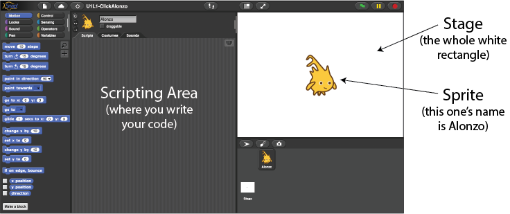
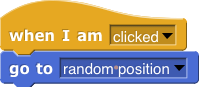
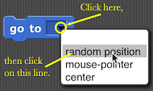

Click Alonzo Game
Alonzo is a quick, slippery sprite. Can you click fast enough to capture him?
-
Click here to load a starter project

-
Make Alonzo jump someplace else on the stage when he's clicked. Drag these two blocks into the scripting area (the
center area of the window):


To find a block, look for the matching color palette in the top left.